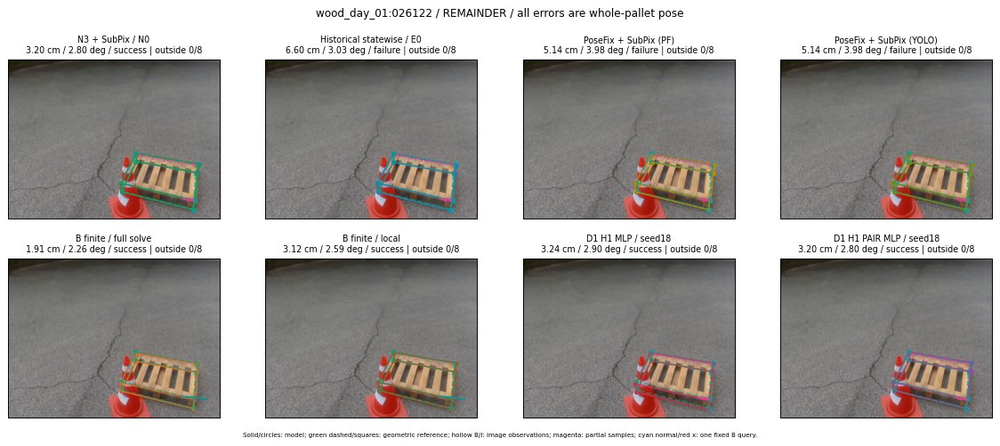

Whole-pallet pose errors; reference is a fixed geometric annotation, not certified physical GT.

Scores are uncalibrated logits. N0 retention is a numerical pose alias; it differs from H0 none or B fallback. B/I and profiles in baseline/B panels are original observations; L panels use new D1 observations. Only one deterministic supported B query is shown in a thumbnail; full support counts are below. Grey privacy rectangles edit the display copy only and are unrelated to O states; all observations were measured on original pixels. Thumbnails use JPEG quality85; detailed scientific panels are PNG.
| Method | Whole pose / cm, deg | Actual source | Selected ID | Score | Archived candidates | Eligible | N0 retained | H0 none | Fallback | Finite profiles |
|---|---|---|---|---|---|---|---|---|---|---|
| Raw YOLO + F | 3.20 cm / 1.43 deg / success | OTHER | None | N/A | N/A | N/A | False | N/A | None | N/A |
| N3 + SubPix / N0 | 3.20 cm / 2.80 deg / success | N0 | None | N/A | N/A | N/A | True | N/A | None | N/A |
| Historical statewise / E0 | 6.60 cm / 3.03 deg / failure | E0_REGENERATED | None | N/A | N/A | N/A | False | N/A | False | N/A |
| PoseFix raw | 3.73 cm / 1.71 deg / success | OTHER | None | N/A | N/A | N/A | False | N/A | None | N/A |
| PoseFix + SubPix (PF) | 5.14 cm / 3.98 deg / failure | OTHER | None | N/A | N/A | N/A | False | N/A | False | historical support records 9; finite audit N/A |
| PoseFix + SubPix (YOLO) | 5.14 cm / 3.98 deg / failure | OTHER | None | N/A | N/A | N/A | False | N/A | False | historical support records 9; finite audit N/A |
| Historical L, seed18 | 3.20 cm / 2.80 deg / success | N0 | N0 | N/A | 48 | 44 | True | True | True | N/A |
| Historical B fixed bank | 3.24 cm / 2.90 deg / success | OTHER | G10/ORIGINAL_WD/sample/0 | N/A | N/A | N/A | False | N/A | False | N/A |
| Historical B full | 1.97 cm / 2.28 deg / success | OTHER | NEW/B/ORIGINAL_WD/h2/G10/SWAPPED_WD/sample/2/PROPOSED_NATIVE_YAW_2 | N/A | N/A | N/A | False | N/A | False | N/A |
| Historical edge full | 7.93 cm / 15.68 deg / failure | OTHER | NEW/edge/ORIGINAL_WD/h0/G13/ORIGINAL_WD/sample/0/PROPOSED_NATIVE_YAW_0 | N/A | N/A | N/A | False | N/A | False | N/A |
| Historical AB full | 1.89 cm / 2.27 deg / success | OTHER | NEW/AB/ORIGINAL_WD/h0/G13/ORIGINAL_WD/sample/0/PROPOSED_NATIVE_YAW_0 | N/A | N/A | N/A | False | N/A | False | N/A |
| B finite / fixed bank | 3.24 cm / 2.90 deg / success | OTHER | G10/ORIGINAL_WD/sample/0 | N/A | N/A | N/A | False | N/A | False | 18/18 |
| B finite / full solve | 1.91 cm / 2.26 deg / success | OTHER | NEW_FINITE/B/ORIGINAL_WD/h0/G13/ORIGINAL_WD/sample/0/PROPOSED_NATIVE_YAW_0 | N/A | N/A | N/A | False | N/A | False | 18/18 |
| B finite / local | 3.12 cm / 2.59 deg / success | OTHER | NEW_FINITE/B/ORIGINAL_WD/h0/N0_LOCAL_SAME_PHYSICAL_POSE/ORIGINAL_WD | N/A | N/A | N/A | False | N/A | False | 18/18 |
| Edge finite / full solve | 8.92 cm / 10.62 deg / failure | OTHER | NEW_FINITE/edge/ORIGINAL_WD/h2/G10/SWAPPED_WD/sample/2/PROPOSED_NATIVE_YAW_2 | N/A | N/A | N/A | False | N/A | False | 18/18 |
| D0 H0 MLP / seed18 | 3.20 cm / 2.80 deg / success | N0 | N0 | 3.4608235359191895 | 23 | 19 | True | True | True | N/A |
| D0 H0 MLP / seed19 | 3.20 cm / 2.80 deg / success | N0 | N0 | 3.974262237548828 | 23 | 19 | True | True | True | N/A |
| D0 H0 MLP / seed20 | 3.20 cm / 2.80 deg / success | N0 | N0 | 1.7784125804901123 | 23 | 19 | True | True | True | N/A |
| D0 H1 MLP / seed18 | 3.24 cm / 2.90 deg / success | OTHER | G10/ORIGINAL_WD/selected | -0.8167752623558044 | 23 | 19 | False | False | False | N/A |
| D0 H1 MLP / seed19 | 3.24 cm / 2.90 deg / success | OTHER | G10/ORIGINAL_WD/selected | -0.8856146335601807 | 23 | 19 | False | False | False | N/A |
| D0 H1 MLP / seed20 | 3.24 cm / 2.90 deg / success | OTHER | G10/ORIGINAL_WD/selected | -2.0006470680236816 | 23 | 19 | False | False | False | N/A |
| D1 H0 MLP / seed18 | 3.20 cm / 2.80 deg / success | N0 | N0 | 7.36373233795166 | 23 | 19 | True | True | True | N/A |
| D1 H0 MLP / seed19 | 3.20 cm / 2.80 deg / success | N0 | N0 | 7.104257106781006 | 23 | 19 | True | True | True | N/A |
| D1 H0 MLP / seed20 | 3.20 cm / 2.80 deg / success | N0 | N0 | 6.398540019989014 | 23 | 19 | True | True | True | N/A |
| D1 H1 MLP / seed18 | 3.24 cm / 2.90 deg / success | OTHER | G10/ORIGINAL_WD/selected | -0.9654213190078735 | 23 | 19 | False | False | False | N/A |
| D1 H1 MLP / seed19 | 3.24 cm / 2.90 deg / success | OTHER | G10/ORIGINAL_WD/selected | -1.2458841800689697 | 23 | 19 | False | False | False | N/A |
| D1 H1 MLP / seed20 | 3.24 cm / 2.90 deg / success | OTHER | G10/ORIGINAL_WD/selected | -1.2775399684906006 | 23 | 19 | False | False | False | N/A |
| D1 H1 ROLE AFFINE / seed18 | 3.20 cm / 2.80 deg / success | N0 | N0 | -0.4781229794025421 | 23 | 19 | True | False | False | N/A |
| D1 H1 ROLE AFFINE / seed19 | 3.20 cm / 2.80 deg / success | N0 | N0 | 0.02600010856986046 | 23 | 19 | True | False | False | N/A |
| D1 H1 ROLE AFFINE / seed20 | 3.20 cm / 2.80 deg / success | N0 | N0 | -0.16483138501644135 | 23 | 19 | True | False | False | N/A |
| D1 H1 PAIR MLP / seed18 | 3.20 cm / 2.80 deg / success | N0 | N0 | -1.7776159048080444 | 23 | 2 | True | False | False | N/A |
| D1 H1 PAIR MLP / seed19 | 3.20 cm / 2.80 deg / success | N0 | N0 | -1.7025117874145508 | 23 | 2 | True | False | False | N/A |
| D1 H1 PAIR MLP / seed20 | 3.20 cm / 2.80 deg / success | N0 | N0 | -1.8110566139221191 | 23 | 2 | True | False | False | N/A |
| D1 H1 PAIR ROLE AFFINE / seed18 | 3.20 cm / 2.80 deg / success | N0 | N0 | -0.9945432543754578 | 23 | 2 | True | False | False | N/A |
| D1 H1 PAIR ROLE AFFINE / seed19 | 3.20 cm / 2.80 deg / success | N0 | N0 | -0.942287027835846 | 23 | 2 | True | False | False | N/A |
| D1 H1 PAIR ROLE AFFINE / seed20 | 3.20 cm / 2.80 deg / success | N0 | N0 | -0.729794442653656 | 23 | 2 | True | False | False | N/A |
| Regenerated common E0 | 6.60 cm / 3.03 deg / failure | E0_REGENERATED | E0_REGENERATED | N/A | N/A | N/A | False | N/A | False | N/A |